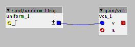

Id like a bit of velocity-like movement with an oscillator. For every note triggered by internal sequencer, I want a random velocity/vol etc on each. Quiet notes, louder notes. I want it to be able to be retriggered by the next note. So no glitchy jumps. What objects could I be looking at? Thanks
Velocity-like movement on oscillator
hitachii
#2
I'm reading that if a random note in the sequence has a high velocity you want the next note to be of a similar velocity relative to the time it's been since last one. Is that in the ballpark?
I would have a random trig for the note of the sequence and a separate sine or triangle lfo that's slower than your sequence, going to a vca that's in line with the amp envelope you're using.
That way, if you have 3 random notes (any number really) in the span of 16 steps you always know that the next one is going to be louder or softer depending on the phase of the lfo.
An envelope follower would work too but I don't have much experience with them
maceq687
#3
I would probably start from something as easy as this:

This will generate random value on gate pulse and you can add the vca to your audio chain.
Some scaling might be required as the rand object generates numbers within +/-64 range and the vca might prefer something within 0-127 or 0-1 range
EarthTemple
#4
Thanks @maceq687 Ive tried that and phi/prob/%rand i but both are a bit clicky on the attack. I can turn the attack env down a bit - but its still there. Thought there might be another way. Also, a min and max range value would be great.
lokki
#5
the clickiness comes from the sudden changes, so just multiply the random signal with a ad module that you trigger at the same time as the rand/uniform f trig...after that go into the gain/vca...
EarthTemple
#6
Thanks Lokki! Multiply? I’ve tried a few variations, same click from it changing. Any chance of a diagram or pic?
lokki
#7
actually, just put a smooth object after the random that should even out the changes enough.
EarthTemple
#8
Thanks Lokki, I had a quick attempt with a Smooth, maybe I didnt have it tweaked right, also I was only using a small speaker, so I couldnt be clear. It seemed mess with attack/release and side issue was a volume drop. I’ll do a clearer test with the studio speakers in the next day or so.
lokki
#9
Yeah, well maybe you have to explain again what you want to do really.
In order to have no clicks there are several options:
even out the changes, so there are no sudden jumps in the env signal (the smooth option) this will introduce some laginess, as you experienced, volume drop shouldn't happen.
use an adsr object, and use the random value as the sustain parameter, actually that should work quite well
use a vca object that only updates volume on zero crossings of the audio signal, @SmashedTransistors has such an object in his library, this should prevent clicks, even with random directly connected to said vca
If you still struggle, i will try to make a simple patch for you
{kind=link}
EarthTemple
#11
Thanks Philoop, that mixmax object is handy. So I noticed the ‘click’ or ‘pop’ is only really noticeable on the attack on a clean sine wave as it opens up. Still annoying  could be the phi/osc/slowsine Im using? Ill try some others but In using the Octave part
could be the phi/osc/slowsine Im using? Ill try some others but In using the Octave part  nice
nice
{kind=link}
{kind=link}